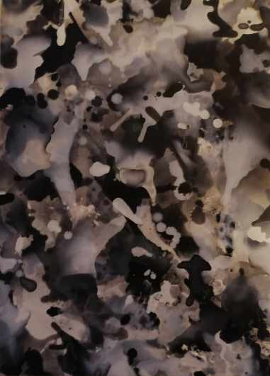

About me
From a small village in Kent and based in Bristol since 1998, my background is in art and philosophy, having received a bachelors degree in Art & Visual Culture, a Masters degree in Fine Art, and a PhD in the philosophy of art. My PhD thesis focused on the meaning of creativity, with a particular interest in the history, interpretation, and documentation of the creative process.
For over ten years I have taught and lectured at university-level in Art and Design, working with students from a variety of disciplines including Fine Art, Graphic Design, Fashion, and Interior Design.
